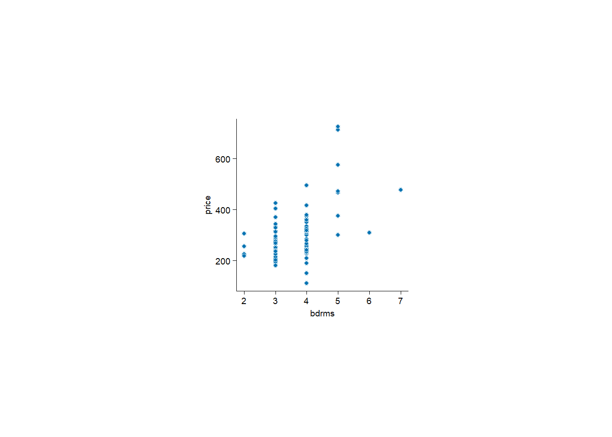

# limpar o ambiente
rm(list = ls())Aula de Introdução
Introdução ao R
Preparar o ambiente
O R é um software de código aberto para análise de dados, estatística e visualização. Antes de começar a utilizar o R é necessário instalr o software e uma IDE.
- Instalar o
Ratravés do Download do R (é necessário escolher o sistema operativo) - Instalar uma IDE para programar em
R. A IDE mais utilizada é o RStudio, contudo surgiu, recentemente, uma nova IDE chamada Posit. Ambas as IDEs são gratuitas e de código aberto.
Neste momentom o Posit é uma IDE mais leve e rápida do que o RStudio.
Uma vista geral do Posit pode ser encontrado aqui.
Primeiros passos
Consola vs Script
A consola (painel inferior) é utilizada para executar código de forma interativa, ou seja, linha a linha. A consolsa permite testar código, nomralmente é utilizada para executar código que não pretendemos guardar. Basta pressionar Enter para executar o código.
O script (painel superior ou control) é utilizado para escrever código de forma estruturada, ou seja, em blocos. O script permite guardar o código e é utilizado para escrever código que pretendemos reutilizar. Para criar um novo script basta clicar em File -> New File -> R File. Para executar o código do script basta selecionar o código e pressionar Ctrl + Enter (Windows) ou Cmd + Enter (MacOS) deste que o cursor esteja na linha do código que pretendemos executar.
Limpar o ambiente do R
Antes de iniciar qualquer projeto no R é importante limpar o ambiente para evitar conflitos entre variáveis.
Efetuar cálculos básicos
# efetuar cálculos
2+2[1] 4o R funciona como uma calculadora, ou seja, é possível efetuar cálculos básicos como adição, subtração, multiplicação e divisão.
Criar objetos no R
# atribuir o resultado a um objeto (alt + -)
x <- 2
4 -> yCálculos com objetos
# remover um objeto do ambiente x
rm(x)
# criar novos objetos
y <- 7
w <- 8
x <- y + wImportar dados externos
# remover todas as variáveis do ambiente
rm(list = ls())Instalar biblioteca readxl para ler ficheiros Excel. Para isso é necessário utilizar a função install.packages para instalar a biblioteca.
Para instalar é necessário colocar o nome da biblioteca com "nome_da_biblioteca"
install.packages("readxl")Carregar a biblioteca
library(readxl)Se uma biblioteca não estiver instalada é necessário instalar a biblioteca antes de carregar a biblioteca. Caso contrário, o R irá retornar um erro indicando que a biblioteca não foi encontrada: Error in library(readxl) : there is no package called 'readxl'.
Carregar dados com a funão read_xlsx
# importar dados
pcasas <- read_xlsx("hprice1.xlsx")Os dados das casas estão organizados da seguinte forma:
| Variável | Definição |
|---|---|
price |
preço da casa (milhares de US$) |
assess |
avaliação da casa |
bdrms |
nº de divisões |
lotsize |
área do terreno |
sqrft |
área da casa |
colonial |
= 1, arquitetura colonial |
Para ver as variáveis do dataset basta utilizar a função colnames:
colnames(pcasas) [1] "price" "assess" "bdrms" "lotsize" "sqrft" "colonial"
[7] "lprice" "lassess" "llotsize" "lsqrft" Estatística descritiva das variáveis
#esatística descritiva
summary(pcasas) price assess bdrms lotsize sqrft
Min. :111.0 Min. :198.7 Min. :2.000 Min. : 1000 Min. :1171
1st Qu.:230.0 1st Qu.:253.9 1st Qu.:3.000 1st Qu.: 5733 1st Qu.:1660
Median :265.5 Median :290.2 Median :3.000 Median : 6430 Median :1845
Mean :293.5 Mean :315.7 Mean :3.568 Mean : 9020 Mean :2014
3rd Qu.:326.2 3rd Qu.:352.1 3rd Qu.:4.000 3rd Qu.: 8583 3rd Qu.:2227
Max. :725.0 Max. :708.6 Max. :7.000 Max. :92681 Max. :3880
colonial lprice lassess llotsize
Min. :0.0000 Min. :4.710 Min. :5.292 Min. : 6.908
1st Qu.:0.0000 1st Qu.:5.438 1st Qu.:5.537 1st Qu.: 8.654
Median :1.0000 Median :5.582 Median :5.671 Median : 8.769
Mean :0.6932 Mean :5.633 Mean :5.718 Mean : 8.905
3rd Qu.:1.0000 3rd Qu.:5.788 3rd Qu.:5.864 3rd Qu.: 9.058
Max. :1.0000 Max. :6.586 Max. :6.563 Max. :11.437
lsqrft
Min. :7.066
1st Qu.:7.415
Median :7.520
Mean :7.573
3rd Qu.:7.708
Max. :8.264 Calculos entre colunas de um data frame
# somar duas colunas bdrms + lotsize
pcasas$soma <- pcasas$bdrms + pcasas$lotsizeÉ necessário escrever o nome do data frame seguido do operador $ para escolher uma coluna específica. Também é possível criar colunas através da funçpão mutate do pacote dplyr:
#install.packages("dplyr")
library(dplyr)
Attaching package: 'dplyr'The following objects are masked from 'package:stats':
filter, lagThe following objects are masked from 'package:base':
intersect, setdiff, setequal, union# criar nova coluna com mutate
pcasas <- pcasas |>
mutate(soma_2 = bdrms + lotsize)onde o operador |> é utilizado para encadear operações, ou seja, para passar o resultado de uma operação para a próxima operação. O operador |> “lê-se” então.
Análise de dados
Quantas casas têm 3 divisões?
Gráfico com tidyplots
library(tidyplots)
pcasas |>
tidyplot(x=bdrms, y=price) |>
add_data_points(white_border = TRUE)
Quantas casas têm estilo colonial?
#frequência absoluta
table(pcasas$colonial)
0 1
27 61 Quais os fatores que influenciam positivamente o preço das casa?
Estimar um modelo:
# estimar modelo
m_price <- lm(price ~ lotsize + bdrms + assess+ sqrft + colonial, pcasas)
summary(m_price)
Call:
lm(formula = price ~ lotsize + bdrms + assess + sqrft + colonial,
data = pcasas)
Residuals:
Min 1Q Median 3Q Max
-105.137 -22.348 -0.817 21.688 203.357
Coefficients:
Estimate Std. Error t value Pr(>|t|)
(Intercept) -4.045e+01 2.159e+01 -1.873 0.0646 .
lotsize 5.993e-04 4.971e-04 1.206 0.2314
bdrms 9.630e+00 6.916e+00 1.392 0.1676
assess 9.041e-01 1.043e-01 8.671 3.25e-13 ***
sqrft 1.071e-03 1.720e-02 0.062 0.9505
colonial 9.548e+00 1.065e+01 0.897 0.3725
---
Signif. codes: 0 '***' 0.001 '**' 0.01 '*' 0.05 '.' 0.1 ' ' 1
Residual standard error: 43.51 on 82 degrees of freedom
Multiple R-squared: 0.8309, Adjusted R-squared: 0.8206
F-statistic: 80.56 on 5 and 82 DF, p-value: < 2.2e-16Será que a 1ª casa da amostra foi vendida abaixo ou acima do preço de mercado?
Ver dados
head(pcasas)# A tibble: 6 × 12
price assess bdrms lotsize sqrft colonial lprice lassess llotsize lsqrft soma
<dbl> <dbl> <dbl> <dbl> <dbl> <dbl> <dbl> <dbl> <dbl> <dbl> <dbl>
1 300 349. 4 6126 2438 1 5.70 5.86 8.72 7.80 6130
2 370 352. 3 9903 2076 1 5.91 5.86 9.20 7.64 9906
3 191 218. 3 5200 1374 0 5.25 5.38 8.56 7.23 5203
4 195 232. 3 4600 1448 1 5.27 5.45 8.43 7.28 4603
5 373 319. 4 6095 2514 1 5.92 5.77 8.72 7.83 6099
6 466. 414. 5 8566 2754 1 6.14 6.03 9.06 7.92 8571
# ℹ 1 more variable: soma_2 <dbl>Calcular o valor de mercado das casas
#valor estimado das casas
pcasas$valor <- fitted(m_price)
head(pcasas)# A tibble: 6 × 13
price assess bdrms lotsize sqrft colonial lprice lassess llotsize lsqrft soma
<dbl> <dbl> <dbl> <dbl> <dbl> <dbl> <dbl> <dbl> <dbl> <dbl> <dbl>
1 300 349. 4 6126 2438 1 5.70 5.86 8.72 7.80 6130
2 370 352. 3 9903 2076 1 5.91 5.86 9.20 7.64 9906
3 191 218. 3 5200 1374 0 5.25 5.38 8.56 7.23 5203
4 195 232. 3 4600 1448 1 5.27 5.45 8.43 7.28 4603
5 373 319. 4 6095 2514 1 5.92 5.77 8.72 7.83 6099
6 466. 414. 5 8566 2754 1 6.14 6.03 9.06 7.92 8571
# ℹ 2 more variables: soma_2 <dbl>, valor <dbl>Calcular a diferença entre o preço de mercado e o preço praticado
pcasas$resid <- resid(m_price)
head(pcasas)# A tibble: 6 × 14
price assess bdrms lotsize sqrft colonial lprice lassess llotsize lsqrft soma
<dbl> <dbl> <dbl> <dbl> <dbl> <dbl> <dbl> <dbl> <dbl> <dbl> <dbl>
1 300 349. 4 6126 2438 1 5.70 5.86 8.72 7.80 6130
2 370 352. 3 9903 2076 1 5.91 5.86 9.20 7.64 9906
3 191 218. 3 5200 1374 0 5.25 5.38 8.56 7.23 5203
4 195 232. 3 4600 1448 1 5.27 5.45 8.43 7.28 4603
5 373 319. 4 6095 2514 1 5.92 5.77 8.72 7.83 6099
6 466. 414. 5 8566 2754 1 6.14 6.03 9.06 7.92 8571
# ℹ 3 more variables: soma_2 <dbl>, valor <dbl>, resid <dbl>Filtra colunas de interesse
#install.packages("tidyverse")
library(tidyverse)── Attaching core tidyverse packages ──────────────────────── tidyverse 2.0.0 ──
✔ forcats 1.0.1 ✔ readr 2.1.5
✔ ggplot2 4.0.0 ✔ stringr 1.6.0
✔ lubridate 1.9.4 ✔ tibble 3.3.0
✔ purrr 1.2.0 ✔ tidyr 1.3.1
── Conflicts ────────────────────────────────────────── tidyverse_conflicts() ──
✖ dplyr::filter() masks stats::filter()
✖ dplyr::lag() masks stats::lag()
ℹ Use the conflicted package (<http://conflicted.r-lib.org/>) to force all conflicts to become errorsComo selcionar as colunas de interesse
pcasa_2 <- pcasas |>
select(price, valor, resid)
head(pcasa_2)# A tibble: 6 × 3
price valor resid
<dbl> <dbl> <dbl>
1 300 330. -29.5
2 370 324. 46.1
3 191 190. 1.15
4 195 212. -16.9
5 373 302. 70.5
6 466. 400. 66.2